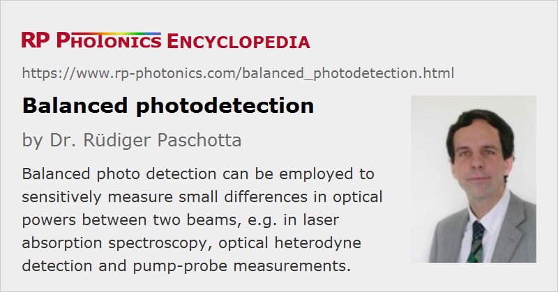

Balanced Photodetection
Definition: a method of photodetection which is sensitive to differences in optical powers but not to common noise
Alternative term: differential photodetection
More general term: photodetectors
German: symmetrische Photodetektion
Categories: photonic devices, light detection and characterization, fluctuations and noise, methods
How to cite the article; suggest additional literature
Author: Dr. Rüdiger Paschotta
The method of balanced photodetection (or differential photodetection) has been developed for detecting small differences in optical power between two optical input signals while largely suppressing any common fluctuations of the inputs.

In its simplest form, one uses two photodiodes connected in series, so that their photocurrents cancel each other when they are equal (see Figure 1). The difference in photocurrents is sent to a transimpedance amplifier, which produces an output voltage proportional to that difference.
As an example for an application, we can consider the measurement of weak absorption features in spectroscopy. Here, one photodetector is used for light which is transmitted through a spectroscopic sample, while the other photodetector is illuminated with light from the same source but which has not gone through the sample. (The two light beams are obtained with a beam splitter between the light source and the sample.) Any intensity noise of the used light source is largely canceled out with that balanced detection scheme, so that measurements with an improved signal-to-noise ratio can be done.
The mentioned cancellation is called common mode rejection and can be quantified in decibels. One often achieves 50 dB or more.
Although a balanced detection setup can be assembled from single components, it can be helpful to use a prefabricated complete assembly, containing matched photodiodes (see below) and the required electronics.
Optimizing Common Mode Rejection
Perfect cancellation would require a perfect match between the two detectors including the optical paths. There are different approaches to optimize a setup in that respect:
- One may use matched photodiodes, having very similar properties. They may be made on the same semiconductor chip in the same process. However, this approach does of course not help against optical asymmetries.
- One can use an adjustable optical attenuator for one of the beams, which may also compensate for any difference in responsivity between the two detectors.
- There are auto-balanced photodetectors, where an electronic circuit automatically cancels asymmetries to some extent. For example, one may use a electronically controlled current splitter for one of the photodiodes and a feedback circuit with a limited bandwidth for controlling that current splitter. The actual measurement can then be done only for frequencies above that feedback bandwidth.
Note that problems can arise e.g. when a free-space input beam extends to the edges of the light-sensitive region on a detector: small changes of beam position may then translate into significant photocurrent changes which affect the difference signal. Deviations from perfect uniformity of the detector responsivity may cause similar problems in conjunction with changes of beam position. Such problems cannot occur for fiber-coupled photodiodes with single-mode fibers, except when free-space light needs to be coupled into such fibers. All-fiber setups, particularly when made with polarization-maintaining single-mode fibers, can be optimized for particularly high common mode rejection.
Of course, any asymmetries in the electronics should also be avoided. Particularly for high-frequency detection, it is also important to have precisely matched cable lengths, since otherwise one would introduce frequency-dependent phase shifts.
Some balanced detectors have an additional low-frequency monitor output which can be used to check the balance of photocurrents.
Shot Noise
In some respects, the behavior of quantum noise differs from that of classical intensity noise. Even when using a perfect 50:50 beam splitter, the optical power fluctuations in the two output ports of such a device are not fully correlated with each other. Therefore, even a perfect a balanced detector would produce some output fluctuations which are related to shot noise. That quantum noise limit is at least much lower than the noise level which one could achieve in many cases without balanced detection.
The relative intensity noise at the shot noise level increases as the optical power is reduced. Therefore, one will often try to operate the photodetectors with power levels as high as possible, limited either by the available optical powers or by the power handling capability of the detectors.
Applications of Balanced Photodetection
Absorption Spectroscopy
As already mentioned above, one may apply balanced detection in laser absorption spectroscopy. The problem with direct detection (using a single photodetector) would be that the detector cannot distinguish between fluctuations due to laser noise and those caused by absorption features. A balanced photodetector can largely suppress the influence of laser noise, which is a common input for both ports – particularly if the setup is well balanced.
Balanced detection can also be applied in conjunction with frequency modulation spectroscopy, where absorption features cause slight changes of amplitude and phase of a laser beam, which can be revealed by comparison with a reference beam in a balanced detector. Of course, the detector should be able to temporally resolve the modulation.
Similar methods can also be applied for pump–probe measurements. The inputs to the balanced detectors are of course not pump and probe beam, but rather the probe beam and a reference beam derived from it, which is not affected by the investigated sample.
Homodyne Detection
In some cases, one uses balanced photodetectors after a 50:50 beam splitter for measuring intensity noise of a laser, for example. With suitable electronic circuits, one obtains the sum and the difference of the photocurrents and feeds both to an electronic spectrum analyzer. While the sum signal reflects the laser intensity noise, just as would be obtained with a single photodetector, the difference signal indicates the shot noise level. Therefore, one can easily compare the laser noise with the shot noise level. In case of amplitude-squeezed light, one can accurately detect sub-shot noise performance.
Interferometric Detection
In various kinds of interferometers – for example, those used for optical coherence tomography – one can substantially improve the noise performance with balanced detection. The two balanced photodetectors receive light from the two outputs of the beam splitter where the signal beam is superimposed with the reference beam. The difference of the photocurrents delivers the wanted interferometric signal while suppressing intensity noise of the light source.
Such techniques are also used for optical heterodyne detection in various other applications.
Suppliers
The RP Photonics Buyer's Guide contains 9 suppliers for balanced photodetectors.
Questions and Comments from Users
Here you can submit questions and comments. As far as they get accepted by the author, they will appear above this paragraph together with the author’s answer. The author will decide on acceptance based on certain criteria. Essentially, the issue must be of sufficiently broad interest.
Please do not enter personal data here; we would otherwise delete it soon. (See also our privacy declaration.) If you wish to receive personal feedback or consultancy from the author, please contact him e.g. via e-mail.
By submitting the information, you give your consent to the potential publication of your inputs on our website according to our rules. (If you later retract your consent, we will delete those inputs.) As your inputs are first reviewed by the author, they may be published with some delay.
See also: optical heterodyne detection, photodetectors, shot noise, signal-to-noise ratio
and other articles in the categories photonic devices, light detection and characterization, fluctuations and noise, methods
|  |
If you like this page, please share the link with your friends and colleagues, e.g. via social media:
These sharing buttons are implemented in a privacy-friendly way!